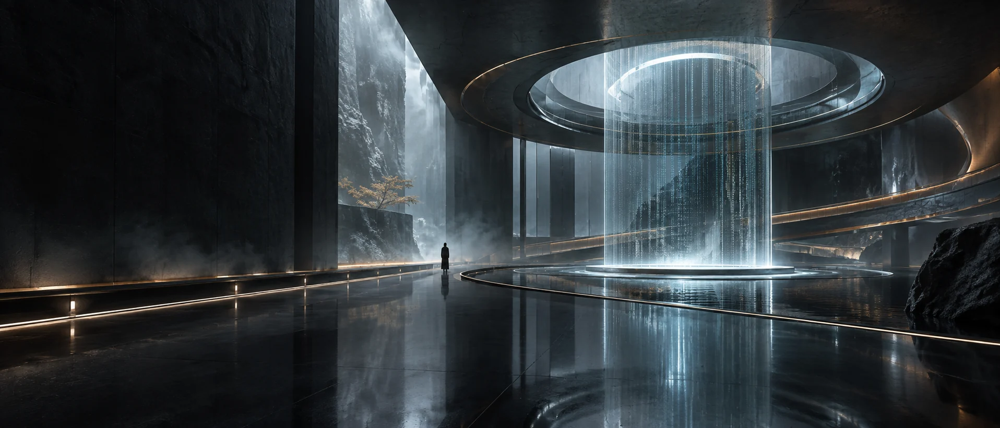
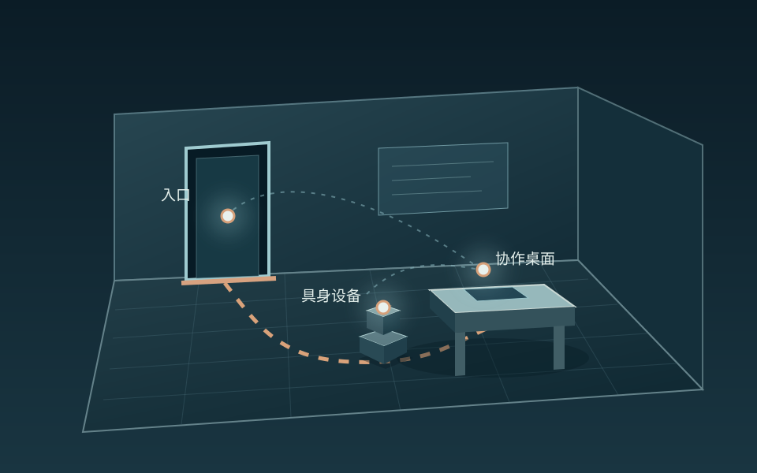
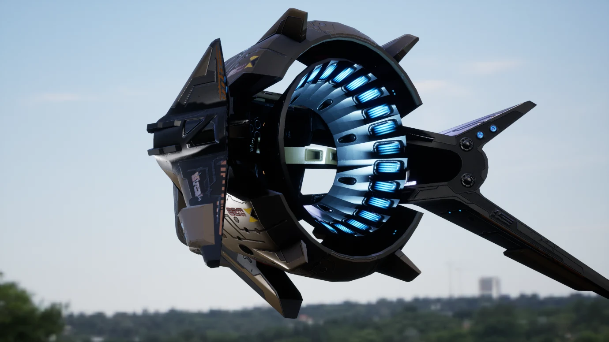
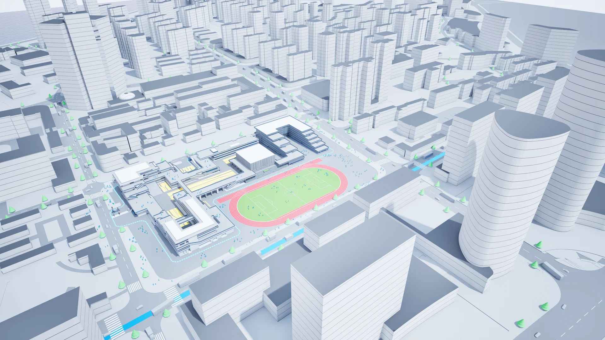
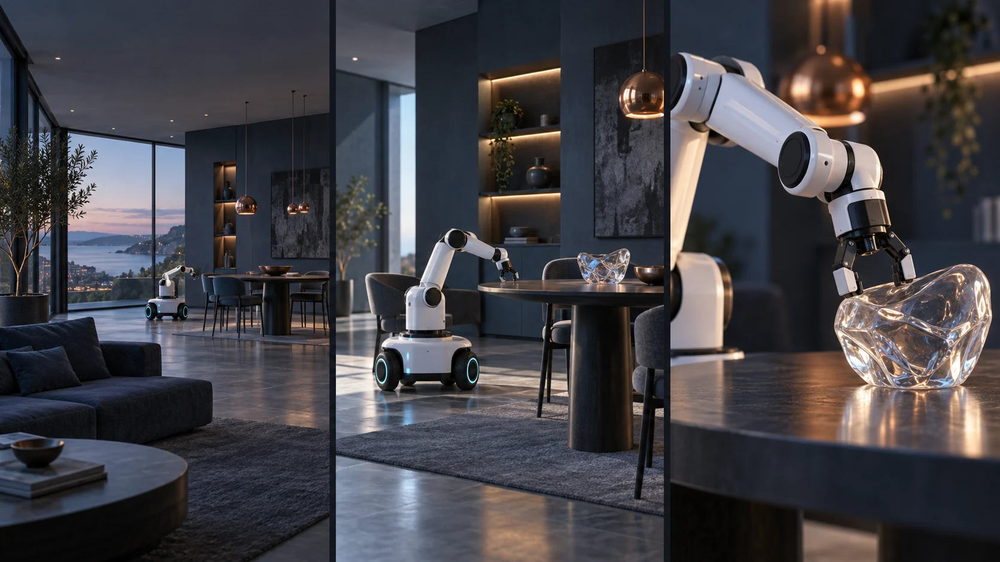
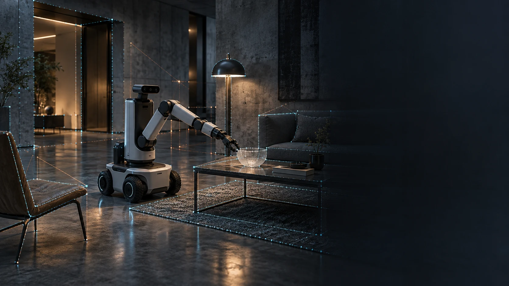
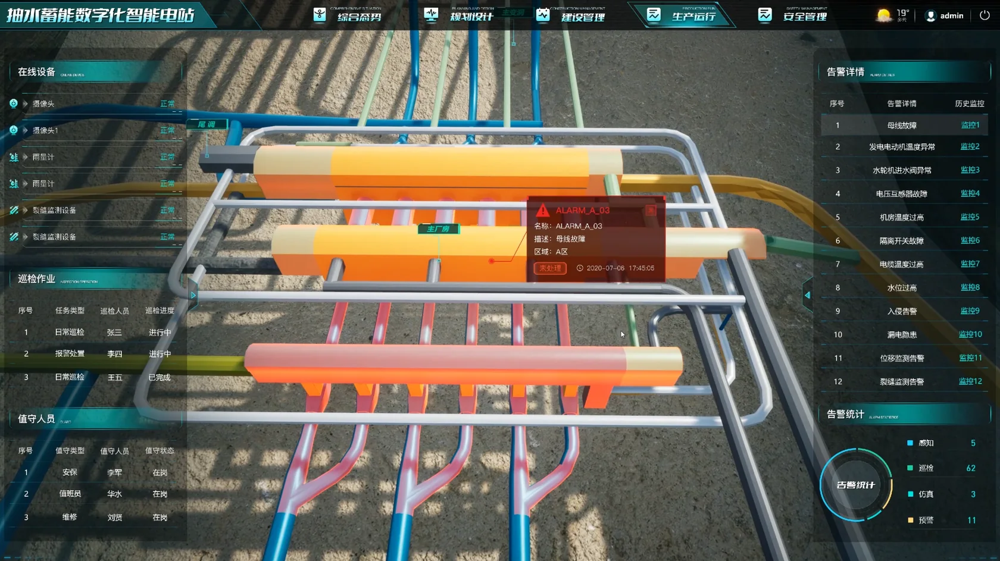

高精度模型生成
以三维资产、扫描或多视角资料为输入，探索 AI 辅助重建与变体。随后校正尺度、拓扑、材质、LOD 与碰撞，让模型真正适合实时场景。

江汉 AI × 智能 × 3D 空间
以三维资产、实时引擎和空间数据为基础，探索模型生成、关系理解、物体语义与具身交互；让同一个空间继续生长为图片、视频和体验。
探索空间智能关于我的工作
我有 8 年以上三维美术相关经验，从游戏场景、智慧城市和工业仿真走到车机 HMI 与智能空间。过去的工作让我熟悉三维资产、GIS/BIM 数据、UE 实时呈现和团队协作；现在，我关注 AI 如何在这些基础上理解空间、连接设备，并参与视觉内容的创作。
三维资产 / 空间数据 / 实时交互
近期探索 / AI × 智能 × 3D 空间
一个智能空间不能只有漂亮的模型。它还需要知道物体的位置与用途、通道是否可达、设备正在执行什么任务。我正在把三维资产、空间数据与实时交互经验，整理成一条从“建模”走向“理解与行动”的方法链路。下方交互为方法概念演示，真实项目经验见作品集。

入口 / 桌面 / 具身设备 · 空间关系概念演示
空间语义 · 概念演示
点选房间中的三个对象，查看它们的位置、可达关系和设备路径。所有标签和关系均由设计者预先设定。
在这个演示中，入口被定义为通行区域。具身设备的预设路径从这里进入房间。
桌面被定义为可接近的任务目标。路径在桌前结束，表示设备可以在此参与空间中的服务流程。
设备沿预设轨迹移动，用来表达空间、对象与行动之间的联系。它没有接入摄像头或真实识别模型。
本画面是视觉概念演示；物体标签、关系与路径均为手工设定，不代表 AI 实时识别、追踪或导航结果。
以三维资产、扫描或多视角资料为输入，探索 AI 辅助重建与变体。随后校正尺度、拓扑、材质、LOD 与碰撞，让模型真正适合实时场景。
把房间、通道和物体放进同一坐标系，表达距离、相邻、遮挡、视线与可达性，让空间从“看起来合理”走向“可以查询”。
为门、桌面、设备等对象定义类别、位置、状态、用途和可交互区域，让系统理解“这是什么、在哪里、能做什么”。
围绕任务目标、路径和反馈建立场景原型，观察具身设备如何依据空间约束靠近、避让和执行动作，并把结果反馈给人。
让同一空间资产延展为静帧、分镜、镜头动画、短视频和实时体验。AI 加快概念探索，镜头、尺度与叙事仍由创作者把控。
真实作品 / 三维基础
这两张原图来自过往作品：硬表面资产的实时材质表现，以及城市级场景的白模组织。它们展示已有的建模与空间构建经验；上方的语义关系与具身设备属于新的概念探索。


精选作品
以下画面选自个人作品资料。部分封面经过 AI 辅助后期处理，项目图集保留原始画面，点击可对照查看。
空间内容生产 / 图片 + 视频
当模型、材质、灯光、物体位置与动作被统一组织，创作便不必每次从零开始：同一个场景可以切换机位、时间和叙事重点，生成静态画面、镜头序列与交互体验。AI 适合帮助探索分镜和视觉变体；实时引擎让空间尺度与动作关系持续可控。

从情绪板、材质与光照试验，到不同视角的高质量静帧。画面好看之外，还要让空间结构与对象位置在各版本中保持一致。
把场景变成镜头语言：规划机位、路径、节奏与动作反馈，再用实时预览快速调整，最终形成产品演示或叙事短片。
将物体状态、设备行为和观看视角连接起来，让用户的选择改变场景反馈；同一套资产继续服务展厅、网页或空间原型。
本节画面是 AI 生成的方向示意；下方视频来自个人既有作品资料，两类素材来源不同。
真实作品 / 动态影像
两段来自过往作品资料的真实短片，展示车机主题动效与 UE 场景节奏；它们并非上方机器人概念的成片。

正在探索 · 空间语义与具身交互
工作经历
过去的项目经验，让我逐步从场景制作走向视觉技术与团队管理。
目前在智能空间方向工作，关注空间交互、实时内容与物理环境的结合。
负责美术团队管理与车机项目的需求拆解、技术路线和视觉质量把控；参与深蓝 S05 / S07 量产项目及奥迪 POC 验证。
带领 UE 美术团队完成智慧城市与工业仿真项目，推进 Houdini、PCG、Cesium 与数据处理的项目应用。
参与智慧城市可视化项目，负责场景制作、GIS 数据处理，以及 BIM 与 UE 联动的画面落地。
根据项目需求制作产品动画与仿真画面，关注专业性、准确性与视觉效果。
参与游戏场景和道具制作，完成高低模、材质与引擎效果调试。
实践笔记
项目背后的方法，比一张最终效果图更值得记录。从真实的场景生产经验出发，也记录正在探索的空间智能方法。

场景制作 / GIS / UE从 GIS 数据到 UE 场景：可视化项目的几个关键环节阅读笔记AI × 3D 空间 / 实时视觉 / 车机 HMI / UE 场景